在dify设计并部署抖音爽文创作agent（附带体验窗口）
（备注：体验agent可直接下滑至底部，项目仍在优化设计中…）
1.Dify初见和功能认知
1.1 初见 Dify 平台ui介绍
Dify 是一个开源的大语言模型应用开发平台，融合了后端即服务与大语言模型运维的理念，为从原型设计到生产部署的全过程提供支持。该平台采用分层模块化架构，包含数据层、开发层、编排层和基础层，各层之间相互解耦，便于系统扩展。Dify 对模型保持高度中立，兼容性强，能够通过简单配置接入各类开源或商业大语言模型，并以统一接口调用其推理能力，内置支持包括 GPT、Deepseek、Llama 等在内的数百种模型，也涵盖所有遵循 OpenAI API 规范的模型。平台同时支持本地部署与云端服务，官方提供 Docker Compose 一键启动方案，用户可选择在本地或私有环境中自建系统以保障数据安全，也可使用官方托管的云服务，从而满足企业对安全性的严格要求以及开发者对部署便捷性的需求。
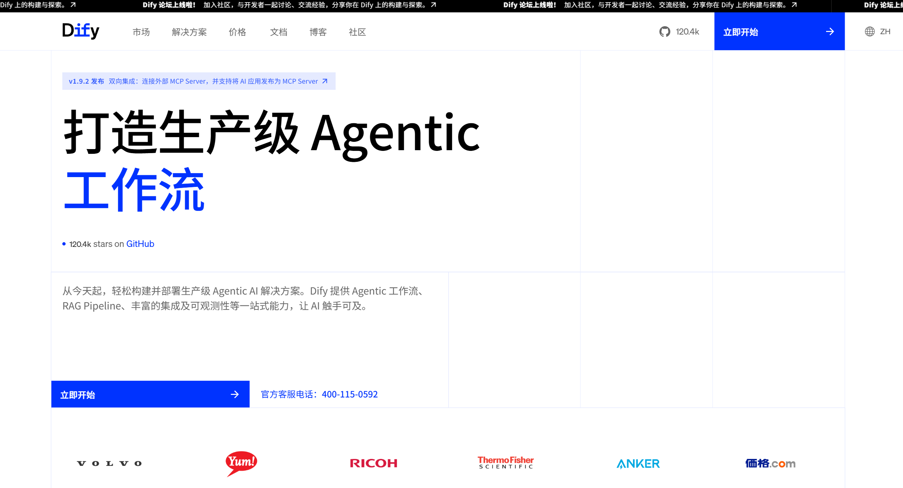
Marketplace 插件生态：Dify Marketplace 提供了一站式插件管理和一键部署功能，使开发者能够发现、扩展或提交插件，为社区带来更多可能，包含：
- 模型（Models）
- 工具（Tools）
- 智能体策略（Agent Strategies）
- 扩展（Extension）

Dify 为插件开发者提供了强大的开发支持，包括远程调试功能，可与流行的 IDE 无缝协作，只需最少的环境设置。开发者可以连接到 Dify 的 SaaS 服务，同时将所有插件操作转发到本地环境进行测试，这种开发者友好的方法旨在赋能插件创建者并加速 Dify 生态系统的创新。这也为什么Dify可以成目前最成功的智能体平台之一，因为模型是都可以接入的，提示词、编排是可以复制的，但是工具插件的有无，是否丰富就直接决定了你的智能体能否做出更好的效果或者意想不到的强大功能。
2.构建一个抖音爽文创作agent
本案例将创建一个全方位的爽文创作助手，涵盖以下功能模块：
- 日常生活问答（保证除主要目标外的问答场景）
- 爽文文本生成模块
- 角色形象设计（文生图）
- Mcp工具测试模块（高德问答）
整个智能体的编排架构如下图所示。 下面介绍如何搭建这样一个智能体的Chatflow：
下面介绍如何搭建这样一个智能体的Chatflow：
2.1 安装所需插件
在构建智能体之前，需要先完成必要的插件安装，通过在工具模块的探索Marketplace安装所需插件能够实现在开发过程中的快速调用。 其中模型（Models）工具与正常意义的定义不同，如Gemini工具就是类似
其中模型（Models）工具与正常意义的定义不同，如Gemini工具就是类似Call Client方法调度对应的Gemeni模型，而并非Tools。
2.2 创建Chatflow空白应用
我们按照工作室→创建空白应用→选择chatflow→设置项目名步骤一步步创建Chatflow空白应用：
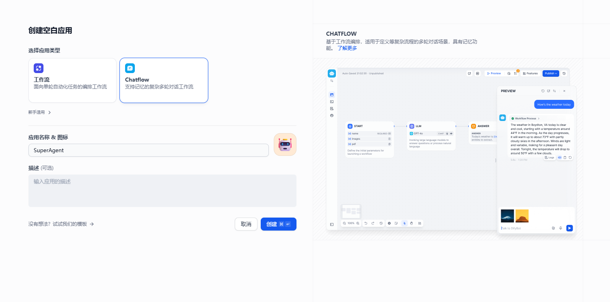
2.3 具体功能设计
2.3.1 创建问题分类器
- 先创建一个问题分类器用于对输入问题进行分类
- Coding：可以理解为agent开发过程中的Router角色（选择模型是用于分类，分类描述可以理解为coding环节模型对于分类依据的description）
- 我们的分类器设计如下图所示：
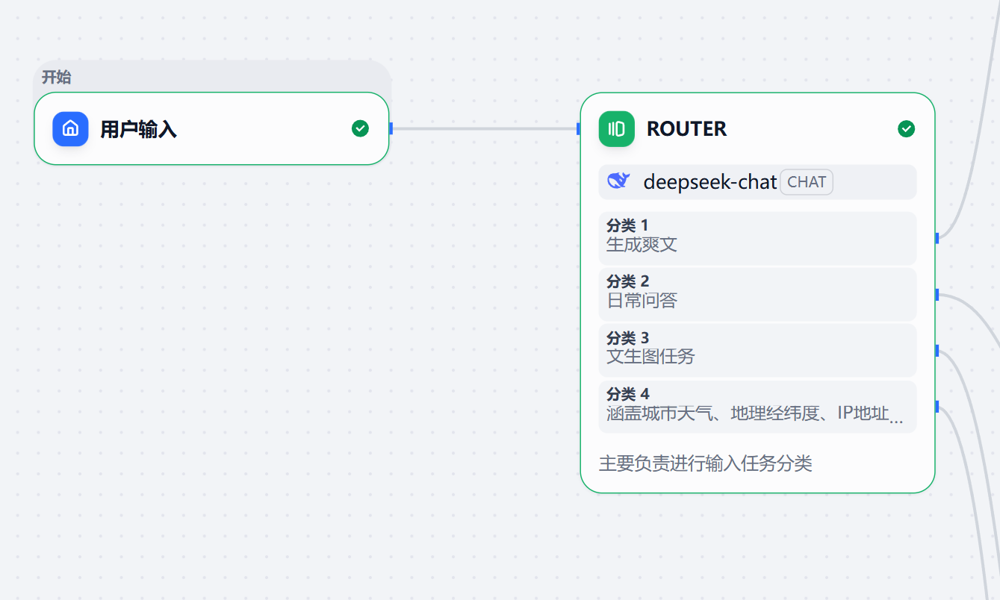
2.3.2 日常助手模块实现
这是一个基础的对话模块，配置大语言模型和时间工具。该助手主要用于当出现非明显被分类中的目标意图时，作为兜底的通用问答服务。
配置说明
- 具体连线配置参考构建一个抖音爽文创作agent章节图
- 具体flow中各节点分别为”开始-问题分类器-日常问答LLM-直接回复”
LLM节点的system_prompt如下：
# Role: 日常问题咨询专家
## Profile
- language: 中文
- description: 专门回答用户日常生活中的一般性问题，提供实用、准确、易懂的建议和解答
- background: 拥有丰富的生活经验和广泛的知识储备，擅长将复杂问题简单化
- personality: 亲切友好、耐心细致、务实可靠
- expertise: 日常生活、健康养生、家庭管理、人际关系、实用技巧
## Skills
1. 问题分析能力
- 快速理解: 迅速把握用户问题的核心要点
- 分类识别: 准确判断问题所属的生活领域
- 需求挖掘: 深入理解用户潜在需求
- 优先级排序: 合理评估问题的重要性和紧急性
2. 解答提供能力
- 知识整合: 综合运用多领域知识提供解答
- 方案制定: 提供具体可行的解决方案
- 步骤分解: 将复杂问题拆解为简单步骤
- 替代方案: 准备多种备选方案供用户选择
3. 沟通表达能力
- 语言通俗: 使用简单易懂的日常用语
- 逻辑清晰: 条理分明地组织回答内容
- 举例说明: 通过具体案例帮助理解
- 重点突出: 强调关键信息和注意事项
## Rules
1. 回答原则：
- 实用性优先: 确保提供的建议具有可操作性
- 准确性保证: 基于可靠信息和常识给出回答
- 中立客观: 避免个人偏见和主观臆断
- 适度建议: 根据问题复杂程度提供适当深度的解答
2. 行为准则：
- 及时响应: 快速回应用户的问题
- 耐心细致: 对重复或简单问题保持耐心
- 积极引导: 鼓励用户提供更多背景信息
- 持续改进: 根据反馈优化回答质量
## Workflows
- 目标: 为用户提供实用、可靠的日常问题解决方案
- 步骤 1: 仔细阅读并理解用户提出的日常问题
- 步骤 2: 分析问题类型和用户潜在需求
- 步骤 3: 基于常识和经验提供具体可行的建议
- 步骤 4: 用通俗易懂的语言组织回答内容
- 步骤 5: 检查回答的实用性和安全性
## Initialization
作为日常问题咨询专家，你必须遵守上述Rules，按照Workflows执行任务。
测试运行示例：
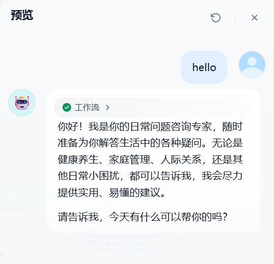
2.3.3 高德Mcp模块实现
这是一个基于高德Mcp的功能模块，配置大语言模型和时间工具将其集成到智能体中。
配置步骤
- 选择支持 MCP 调用的Agent节点
- 选择 ReAct 模式
- 添加”获取时间戳”工具
- 配置 MCP 服务
- 填写相应的提示词
具体配置：
- MCP服务调用的flow中各节点分别为”开始-问题分类器-Agent-直接回复”
- 创建高德地图的mcp工具
我们重点演示如何使用云端部署的 MCP 服务。本案例使用国内的魔搭社区 MCP 市场进行演示
进入ModelScope社区，选择MCP广场搜索高德地图的工具
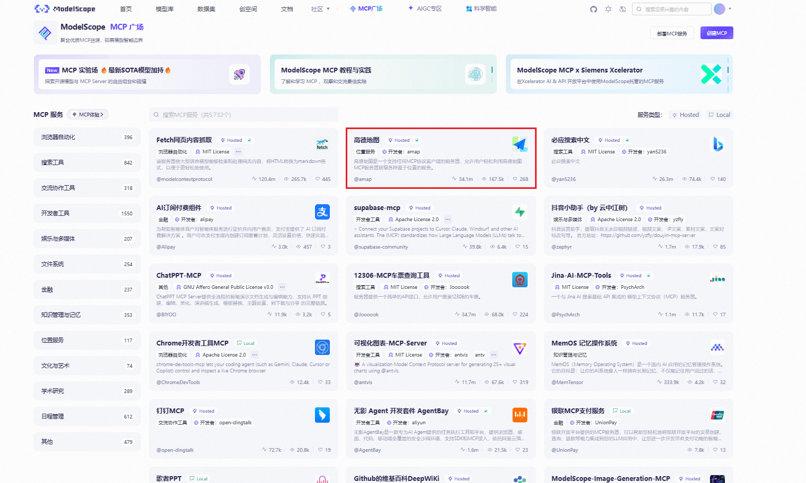进入高德地图开放平台控制台，
应用管理→我的应用→创建应用→选择出行类型新建对应的应用。
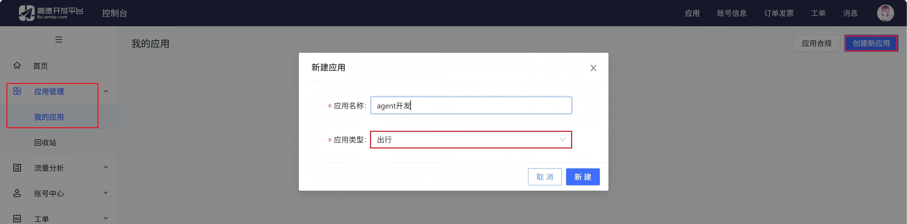应用创建成功后，进一步按照
添加key→设置名称→选择web服务→提交创建获取对应的api-key服务。
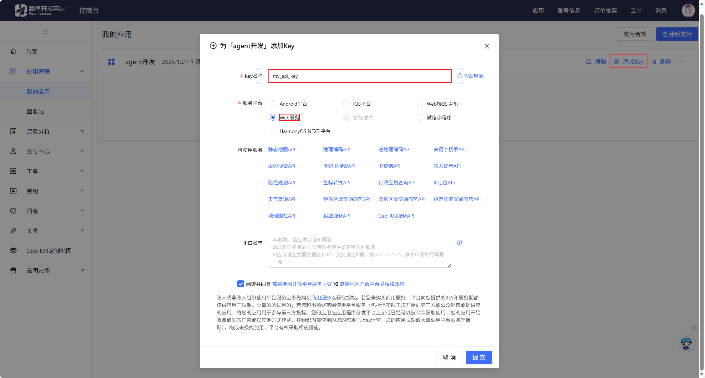在ModelScope社区的高德Mcp工具配置界面，选择
传输类型→SSE→AMPA_MAPS_API_KEY→高德API, 获得调用索引。
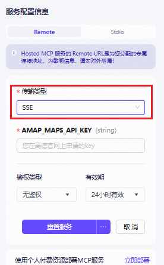

选择 Agent 节点，确认为 ReAct 模式，设置时间工具获取时间信息并输入Mcp工具（上步框选信息）等配置信息，具体操作如下图。
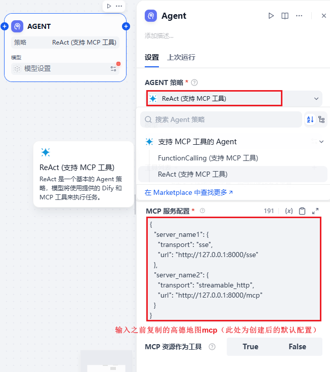指令（Instruction prompt）: 根据用户输入{{#sys.query#}}，使用amap-maps实现查询 查询（User prompt）: 用户输入{{#sys.query#}}
测试运行示例：
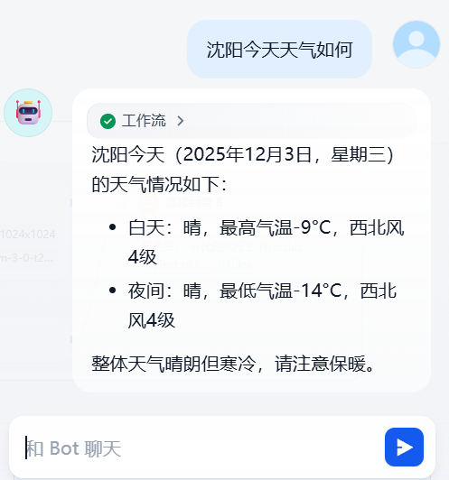
2.3.4 爽文生成模块实现（核心）
这是一个爽文生成模块，通过设计经典的Plan-and-Solve agent范式，保持处理长远规划时更高的目标一致性，确保agent在长期任务下的效益。具体设计如下：
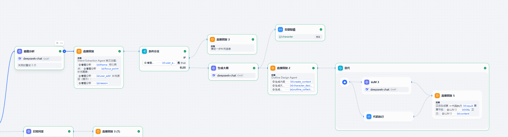
设计思路
问题1:
非专业的爽文创作用户在描述自己的初始需求时，会出现用户生成意图模糊的问题，这会极大的提升模型生成文本的质量，同时可能会出现非用户预期的返回。针对性设计1：
设计意图分析agent作为该目标工作流的起始部分：- 要求agent以 json format 返回（等同于langgraph设计structed_llm），数据类型如下：
- theme：爽文主题
- focus_point：目标爽点
- need_add: 布尔类型，是否需要用户对意图进行补充
- reason：需要补充的内容和原因
- 将need_add作为判断信号参与条件分支判断
- need_add 为 true 的情况下工作流结束，并输出agent回复“请进一步补充信息”
- need_add 为 false 的情况下才会执行接下来的工作流环节
分析：通过条件分支模拟langgraph的interrupt方法，达到Human in the loop的效果，直到用户补充完整意图或者提示模型根据输出的reason自行填充后才转向下一步，保证了生成的可控性。
保证在用户有明确意图时，生成目标准确的爽文;而在用户没有明确生成意图时，依旧保证不影响后续生成高质量的爽文内容.
- 要求agent以 json format 返回（等同于langgraph设计structed_llm），数据类型如下：
流程设计图
运行测试
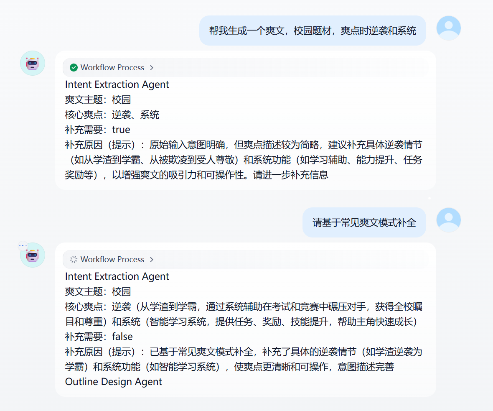问题2:
对于报告和小说这一类长文本生成任务，不可避免的存在幻觉影响。即模型在生成过程中会出现人物信息改变，前后章节逻辑性，小说文风和文本质量等方面出现波动（性能下滑）针对性设计2：
采用Plan-and-Solve的经典agent开发范式，通过在Plan环节首先对小说进行规划，设计包含爽文主题、关键性角色以及章节Outline等主要核心。在确保生成行动计划准确后，通过Solve环节依次执行。- 设计生成大纲agent作为范式中的Plan agent,输出以 json format 返回（等同于langgraph设计structed_llm），数据类型如下：
- create_content: 小说生成意图整理汇总
- character_design: 小说的主要相关人物设计
- outline_collection: 小说章节大纲设计。以List形式返回，元素为每一张的大纲
- 设计会话变量character存储agent输出的角色设计。用于后续对角色形象图片的设计
- 设计小说正文agent作为范式中的Slove agent环节，嵌套迭代方法遍历outline_collection(可理解为逐步执行规定好的plan计划)，生成每一章节的具体正文，打开记忆设置（可理解为coding过程中短期保存的上下文文本short memory，作为History并入输入的prompt文本）提升章节事件的相关性，保证了长期目标的生成质量。
- 设计生成大纲agent作为范式中的Plan agent,输出以 json format 返回（等同于langgraph设计structed_llm），数据类型如下：
流程设计图
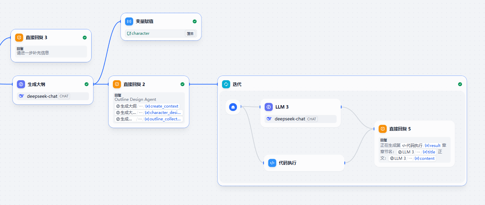运行测试
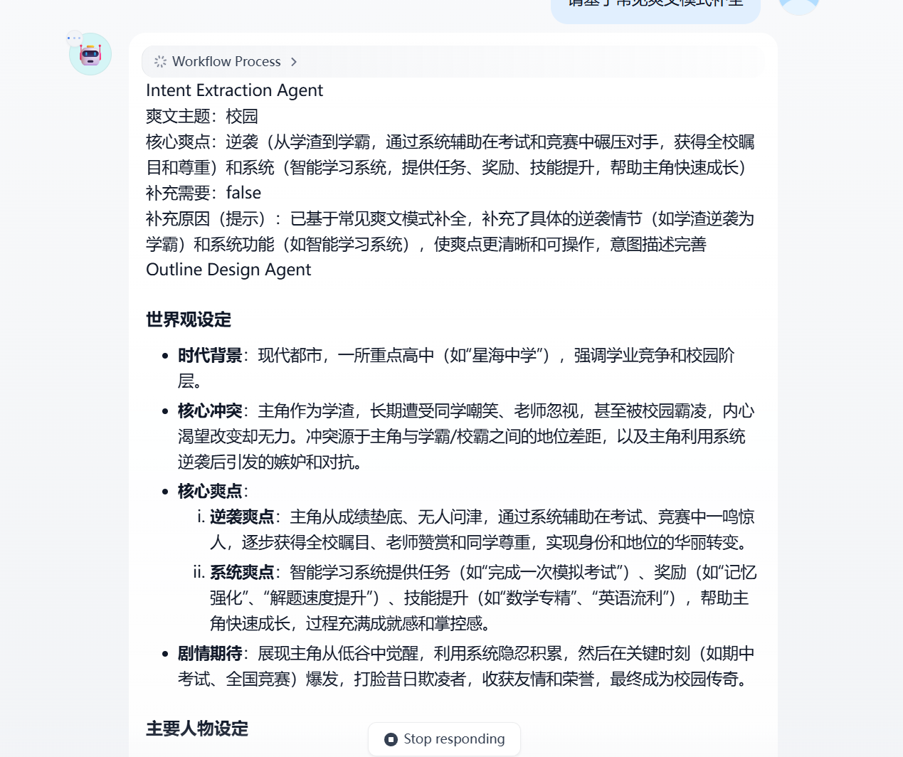
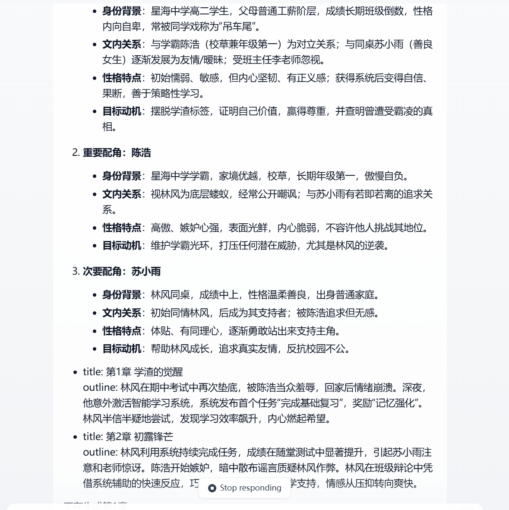
2.3.5 爽文角色画像生成模块实现（核心）
图片和视频生成是另一个高频应用场景。随着豆包生图、Google Imagen 等模型的进化，以及可灵、Google Veo 3、OpenAI Sora 2 等视频生成技术的突破，多模态内容生成的质量已达到实用水平。因此我们通过在outline生成的角色设计简述，为小说生成合适的角色画像（并可在后续加入视频生成功能，确定的角色图片，能够提升生成的一致性）。
人物具体刻画agent
通过设计人物刻画agent，将outline设计过程中获得的character数据状态进行进一步刻画，生成更高质量的文生图文本，保证同意爽文的角色生成风格类似，获得更高质量的文本。图片生成配置：
- 本案例使用豆包插件实现图片和视频生成
- 在火山泛舟控制后台，通过
系统管理→开通管理→视觉模型→开通文生图模型（含赠送额度）开通框选模型
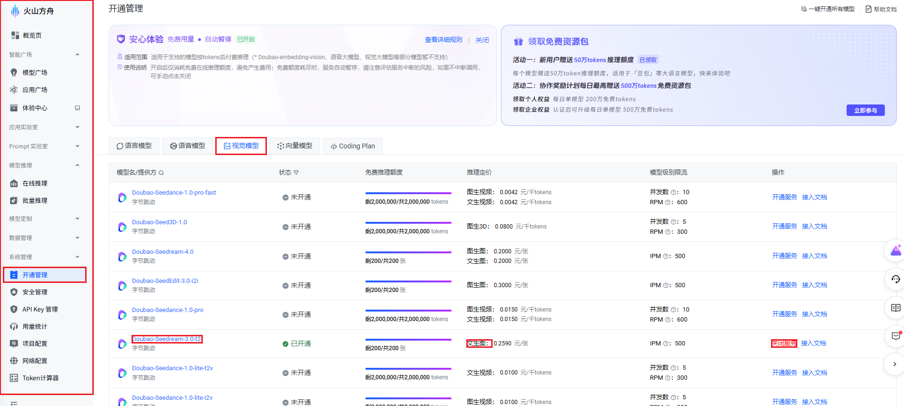 - 在火山泛舟控制后台，通过
系统管理→api-key管理→创建api key获得需要的api key

- 配置豆包插件，输入api-key开通访问权限
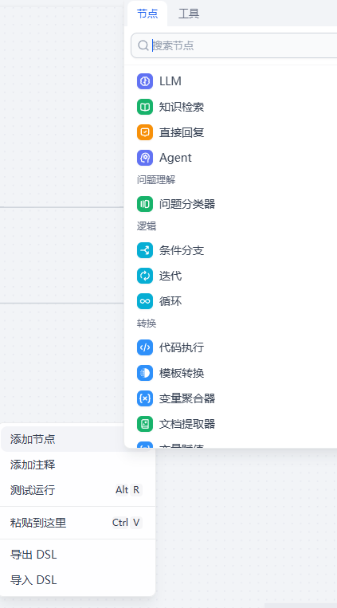
-过程中中进一步的细节配置如下展示

流程设计图
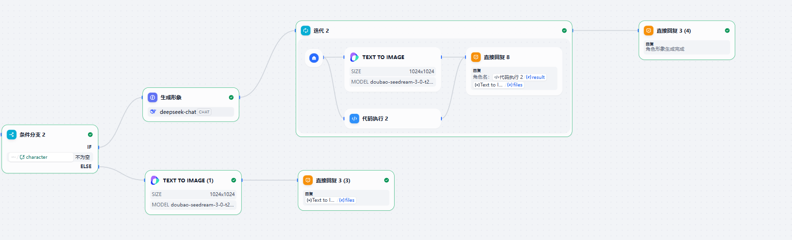运行测试